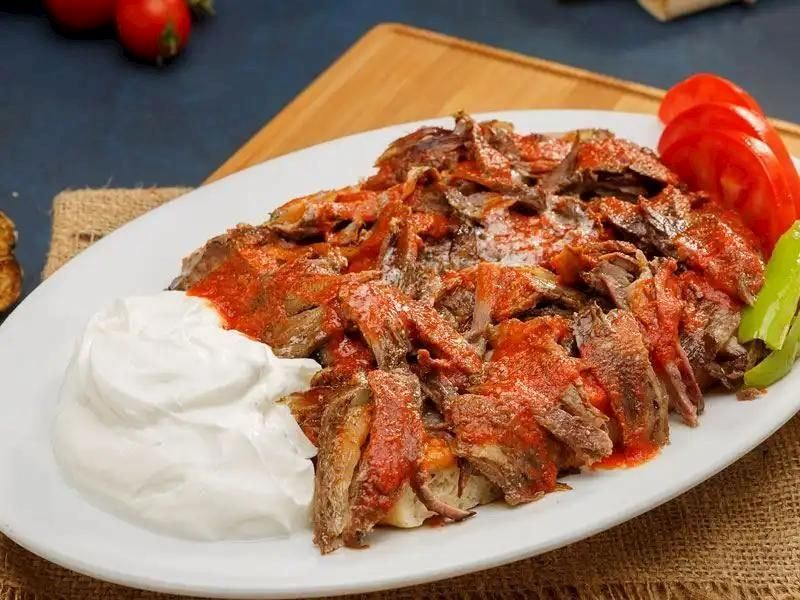
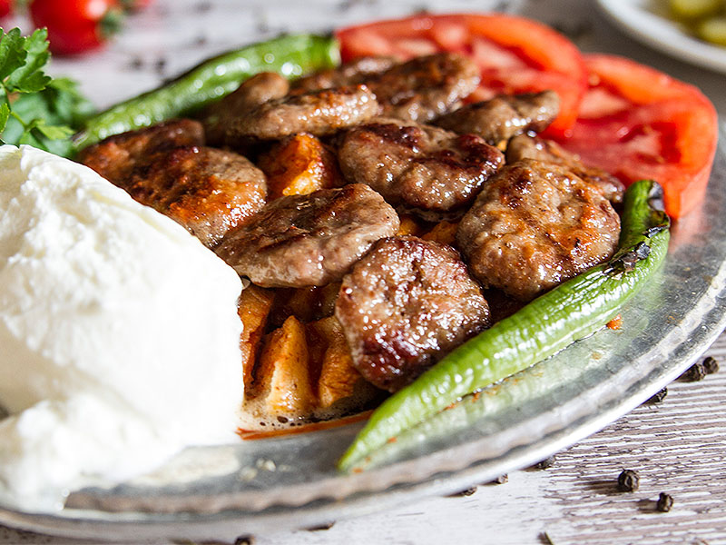
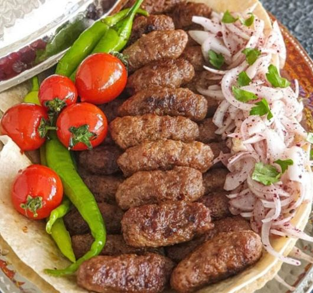
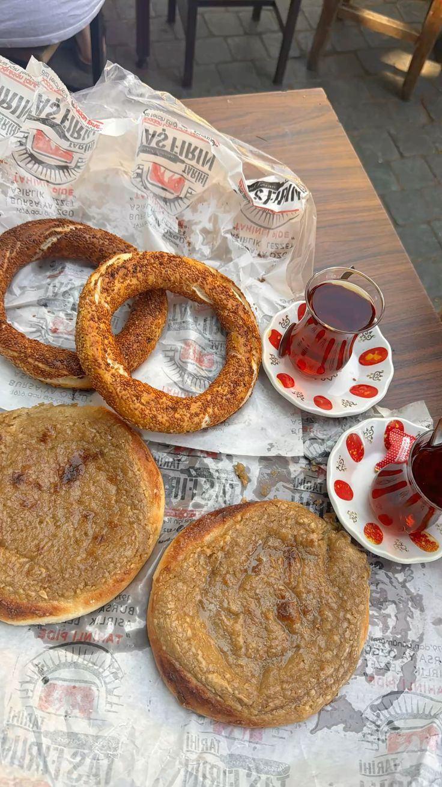
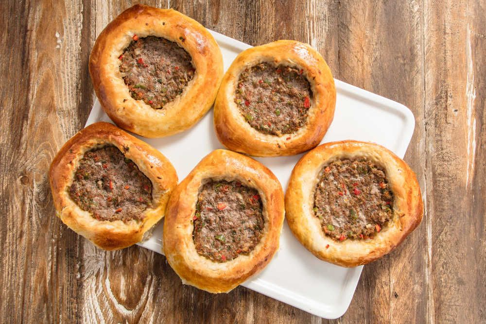
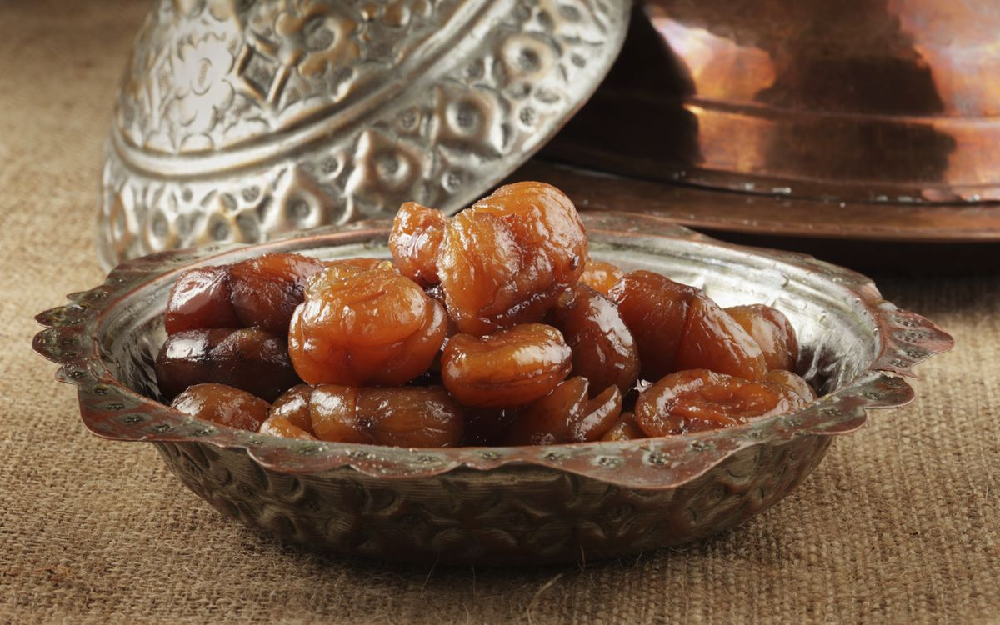
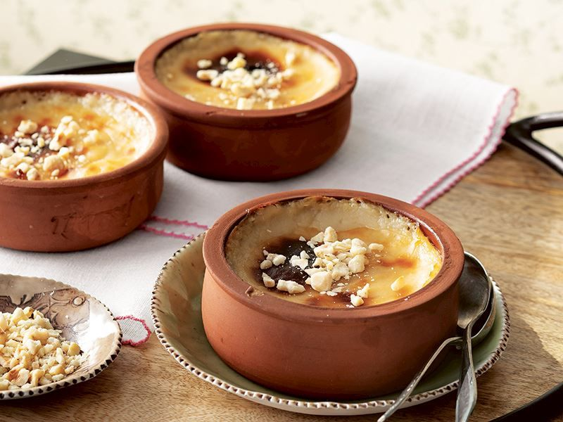

Bursa İskender Kebabı
Meşhur tereyağlı, pideli ve yoğurtlu lezzet.
Osmanlı'nın Başkenti · Yeşil Şehir · Tarihin Kalbi
Osmanlı saray geleneğinin izlerini taşıyan bu mutfak; kebaptan tatlıya, turşudan zeytine uzanan özgün bir lezzet haritası sunar. Aşağıda öne çıkan ürünler madde madde ve görsellerle özetlenmiştir.

Meşhur tereyağlı, pideli ve yoğurtlu lezzet.

İskender’in köfteli versiyonu; özellikle Kayhan Çarşısı’nda meşhurdur.

Baharatsız, sadece etin lezzetine odaklanan yöresel köfte.

Bursa sabahlarının vazgeçilmezi; şekerli ve tahinli çörek.

Bursa’ya özgü, fırında pişen küçük yuvarlak kıymalı pide.

Uludağ’ın kestanelerinden yapılan kentin en popüler hediyeliği.

Sadece Bursa’da bulabileceğin, fırınlanmış hafif ve kremsi tatlı.